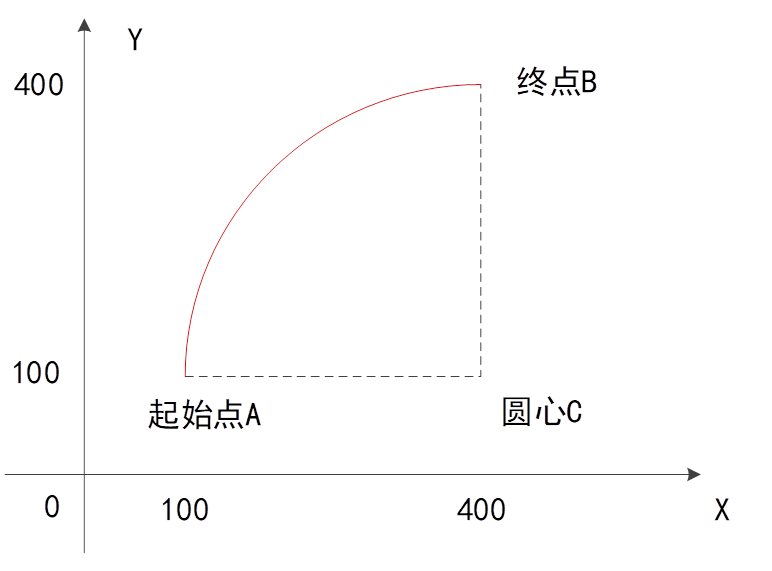
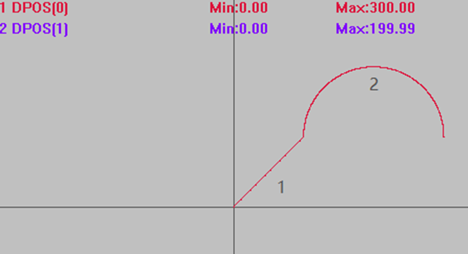
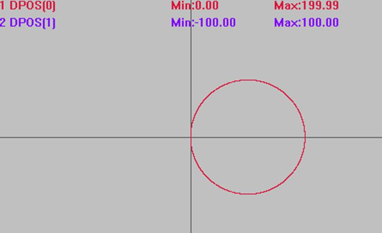

|
类型 |
多轴运动指令 |
|
描述 |
两轴圆弧插补，圆心画弧，相对运动。
BASE第一轴和第二轴进行圆弧插补，相对移动方式，当终点距离为0时为整圆。 自定义速度的连续插补运动可以使用SP后缀的指令，见*SP描述。 使用时需获得圆心和圆弧终点相对于起始点坐标。 坐标位置请确保正确，否则实际运动轨迹会错误。  假设起始点A坐标为（100,100），圆心C坐标为（400,100），终点B坐标为（400,400）。 圆心C相对于起始点A的坐标为（300,0），终点B相对于起始点A的坐标为（300,300）。 |
|
语法 |
MOVECIRC(end1, end2, centre1, centre2, direction) end1：终点第一个轴运动坐标，相对于起始点 end2：终点第二个轴运动坐标，相对于起始点 centre1：圆心第一个轴运动坐标，相对于起始点 centre2：圆心第二个轴运动坐标，相对于起始点 direction：0-逆时针，1-顺时针 |
|
适用控制器 |
通用 |
|
例子 |
ATYPE=1,1 '设为脉冲轴类型 UNITS=100,100 DPOS=0,0 SPEED=100,100 ACCEL=1000,1000 DECEL=1000,1000 TRIGGER '自动触发示波器 MOVE(100,100) '先运动100,100位置 MOVECIRC(200,0,100,0,1) '半径100顺时针画半圆，终点坐标（300,100）
插补轨迹 DPOS(0)垂直刻度150 DPOS(1)垂直刻度150 
其他条件不变，将运动指令修改，起点与终点相同画整圆。 MOVECIRC(0,0,100,0,0) '半径100，圆心（100，0）逆时针画圆
插补轨迹 竖直刻度同上  |
|
相关指令 |